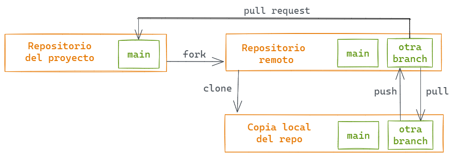

9 Git para trabajar en equipo
9.1 Objetivos de aprendizaje
- Aplicar conceptos de flujos de trabajo usando Git básicos al trabajo colaborativo utilizando GitHub.
- Identificar las diferencias entre branchs y forks e identificar situaciones en las que utilizar cada una.
- Comprender el uso y el rol de las branchs y los pull requests en la colaboración en un proyecto.
- Utilizar funciones del paquete
usethisen un proyecto. - Gestiona pull requests como responsable o líder de un proyecto.
9.1.1 Forks, branchs y pull requests en GitHub
En este capítulo vamos a ver que pinta tiene el flujo de trabajo colaborativo entre personas para hacer análisis de datos y desarrollo de software. Previamente estuviste trabajando con git de manera individual:
Modificar un archivo --> Add --> Commit Todo esto lo hiciste en una branch (o rama) del repositorio que normalmente llamamos main por ser la principal. Una Branchs en git es una etiqueta que señala a un commit específico en el repositorio a partir del cual las versiones del repositorio se bifurcan. Trabajar en una branch te permite modificar archivos sin modificar los mismos archivos en otras branchs, porque esencialmente estás trabajando en un conjunto “paralelo” de archivos. Cuando quieras pasar los cambios que hiciste a la rama principal, tendrías que hacer un merge para combinar las branchs. En entornos de equipo, trabajar en branchs te permite hacer cambios en los archivos sin afectar el trabajo de otras personas en el equipo. Cuando hayas terminado de modificar los archivos, podés hacer un merge con tus cambios en la rama principal para que el resto del equipo tengan también esos cambios. Las branchs se utilizan mucho en proyectos de software y paquetes de R.
El flujo de trabajo colaborativo incluye dos nuevos términos y conceptos: forks y pull requests.
- Forks Un fork es una copia de un repositorio de otra persona o equipo que se almacenará en tu cuenta de GitHub. Tanto el original como el fork están en GitHub, la diferencia es que podés hacer modificaciones en la versión que está en tu cuenta.
- Pull Requests Un pull request o PR es una herramienta de GitHub que permite hacer cambios en un fork o branch y luego solicitar que que la persona a cargo del proyecto haga un merge con esos cambios en el repositorio principal. Los pull requests pueden proceder de forks o de branchs independientes dentro del repositorio. Permiten que las personas que mantienen y quienes colaboran en el proyecto revisen, discutan, soliciten más cambios y aprueben los cambios para hacer el merge a la branch main.
Aprender a utilizar eficazmente estas herramientas y conceptos puede hacer que que colaborar con otras persona sea mucho más fácil y facilita la contribución a otros proyectos. Incluso podrías utilizar este flujo de trabajo aún de manera individual.
Cuando estás colaborando en un proyecto te podés encontrar en una de estas situaciones:
- Escenario 1: Tenés permisos de escritura en el repositorio remoto, en ese caso no necesitas utilizar forks.
- Escenario 2: No tenés permisos de escritura en el repositorio remoto, por lo que tendrías que trabajar en un fork de repositorio original.
En ambas situaciones asumiremos que trabajarás con branchs para separar tu trabajo del de otras personas antes de pasarlas a la branch main.
9.1.1.1 Escenario 1
Este esquema muestra el flujo de trabajo cuando no necesitamos hacer un fork.

- Cloná el repositorio en tu computadora
- Crear una nueva branch.
- Edita archivos, agregalos y hacé commits en esa branch.
- Cuando los cambios estén hechos y listos, envía un pull request al repositorio remoto para comparar tus cambios en tu branch con main.
- El pull request es aceptado y fusionado o hay que hacer nuevos cambios (vuelve al paso 3).
- Una vez que el PR es aceptado y fusionado, la branch principal tiene ahora los cambios actualizados y ya se puede eliminar la branch donde estabas trabajando.
- El proceso puede repetirse varias veces, en paralelo o en secuencia dependiendo del tamaño del equipo.
9.1.1.2 Escenario 2
Para los flujos de trabajo basados en forks, el proceso es el siguiente:

- Crear un fork del repositorio principal (si aún no lo tenés).
- Cloná el repositorio en tu computadora.
- Crear una nueva branch en tu copia del repositorio.
- Realiza ediciones y cambios en los archivos y envíalos a la branch.
- Cuando esté todo listo, abrí el pull request. Si te piden nuevos cambios tendrás que volver al paso 4.
- Si el PR aceptado y fusionado, la branch principal en el repositorio principal se actualizará y la nueva branch se puede borrar.
- Finalmente podés sincronizar tu fork del repositorio con el repositorio principal.
Un reto que surge a menudo es saber cómo y cuándo usar branchs. ¿Hacés todos cambios cambios allí y luego abris un PR a la branch main? ¿creás una branch, haces PR y y la borras inmediatamente después? ¿Qué cambios haces en la nueva branch? La respuesta a estas preguntas dependen del contexto, del equipo, del paquete en el que estés trabajando, de cuáles sean tus objetivos para el paquete, etc. Sin embargo, te damos algunos consejos:
- Cuando haces cambios pequeños y enfocados con un error u objetivo específico (por ejemplo, actualizar la documentación para arreglar un error de tipeo) creá un nueva branch y abrí un PR. Cuanto más pequeños sean los cambios más fácil será revisarlos y aceptarlos.
- Si hacés grandes cambios, lo mejor es que estén relacionados a un problema u objetivo, de modo que al revisar el PR sea más fáci seguirlo y entenderlo.
- Haz cambios relacionados con un issue específico y agregá comentarios en el issue para mantener a todo el mundo al tanto.
9.2 Cómo trabajar
Vamos a mostrar algunos ejemplos de cómo utilizar los flujos de trabajo que vimos recién en distintas situaciones.
- Desarrollando software de manera individual En este caso, probablemente tengas que pensar si tenés que hacer una branch, ya que podés trabajar fácilmente con git sin hacer nunca una branch. Sin embargo, si quisieras experimentar con el código (o texto) sin modificar la branch main, estarás en el escenario 1.
- Desarrollando software de manera individual pero otras personas colaboran Si estás trabajando en un paquete R de código abierto y hay personas que ocacionalmente contribuyen a tu paquete, como resposanble de mantenerlo y desarrollarlo recibirás issues y PR que tendrás que revisar y responder. En este caso es muy importante utilizar branches para reducir la posibilidad de que hagas un cambio en main que puedan afectar a usuarios de tu paquete.
- Colaborando en un proyecto del que no sos parte Si contribuís ocasionalmente con un paquete de R, tendrás que usar el flujo de trabajo del escenario 2. Tendrás que hacer un fork del repositorio del paquete, hacer cambios en nuevas branchs, y abrir PR para proponer esos cambios en el paquete. Este escenario es el más habitual en el mundo de los paquetes R de código abierto, ya que la mayoría de los paquetes son mantenidos por una o varias personas.
- Como miembro de un equipo Si tenés permisos de escritura en el repositorio y formás parte de un equipo que trabaja en ese repositorio, podés trabajar siguiendo el flujo de trabajo en el escenario 1. Harás cambios en los archivos creando primero una branch y, cuando el cambio esté listo, enviarás los cambios al repositorio remoto abriendo un PR para que otras personas en el equipo puedan revisar tu propuesta.
¿Qué flujo de trabajo necesitan estas situaciones?
Considerá estas situaciones y decidí que flujo de trabajo que utilizarías para cada una de ellas.
- Estás en una clase en la que una de las tareas es un trabajo en grupo para crear un paquete de software. ¿Cuál de los flujos de trabajo anteriores será el mejor enfoque para completar un proyecto en equipo? ¿Se te ocurren otros enfoques que puedan funcionar igual de bien? ¿Qué ¿Cuáles son los puntos fuertes y débiles de cada enfoque?
- Un amigo/a se entera de que estás creando un paquete R en tu tiempo libre y quiere contribuir. ¿Qué instrucciones le darías a tu amigo/a para que pueda contribuir? ¿Qué enfoque funcionaría mejor para vos?
- Mientras navegás por la página web de un paquete de R, encontrás algunos errores de tipeo y decidís arreglarlos. ¿Cuál de los enfoques anteriores utilizarías?
9.2.1 Plantemos árboles!
Como ejemplo y ejercicio colaboraremos con la recientemente abierta galeria de arte Flametree, y haremos PRs en el camino.
Fork del repositorio
- Ingresá a github.com/paocorrales/flametree_gallery
- Hacé un fork del repositorio utilizando el botón “Fork” de la esquina superior derecha.

Ahora tenés una copia del repositorio en tu cuenta de GitHub.
- Copia la url del repositorio y clónalo en tu computadora siguiendo las instrucciones para crear un nuevo repositorio que vimos en la sección de git trabajando de manera individual.

Ahora tenés un proyecto RStudio (que también es un repositorio) que es una copia del que está en el repositorio original. Es un proyecto muy pequeño con unos pocos archivos. template_script.R incluye el código necesario para crear bellas imágenes como ésta:

Utiliza el paquete de R flametree creado por Danielle Navarro. No vamos a discutir en profundidad cómo funciona este paquete, pero es una buena excusa para practicar pull requests.
Hacé un cambio en el repositorio
Hacé una copia del archivo
template_script.Ry cámbiale el nombre a<tu-nombre.R>Cambiá el valor de las 3 primeras variables del script:
name: tu nombre.seed: porque hay cosas aleatorias en el código.shades: elegí 4 colores que te gusten.
Podés ejecutar el código si querés ver tu árbol (necesitarás instalar el paquete).
- Guardá el archivo, add al área de preparación y hacé un commit (incluí sólo el archivo .R que creaste).
- Hacé push a tu repositorio remoto.
Hasta este punto hiciste el cambio en tu repositorio local (que es una copia del repositorio principal) y subiste esos cambios a tu repositorio remoto en GitHub. El repositorio original no se enteró de estos cambios porque hasta este punto todo el trabajo lo hiciste en tu repositorio.
Si querés contribuir con los cambios que hiciste (el archivo .R con el código para crear tu árbol) en el repositorio original, es hora de hacer un pull request.
Hacé un pull request
- Entrá a tu repositorio en GitHub, ahí encontrarás tu último commit y un mensaje como este:

- Hacé click en “Open pull request”.
- Y hacé click en “Create pull request”.
- Ahora completá el pull request con un título y un mensaje y luego termina el PR.

¡Listo!
Quien esté a cargo del repositorio recibirá un correo electrónico. Pueden revisar el pull request, hacer comentarios y, finalmente, aceptar la contribución. Cuando esto ocurra, los cambios que hayas hecho aparecerán en el repositorio.
¿En que escenario trabajamos recién? ¿Cuáles serían la diferencias con el otro escenario?
Ahora que sabes como contribuir con un proyecto, podés ayudarnos! Estos materiales están plagados de errores de tipeo y cosas para mejorar, y a esta altura seguro encontraste un montón.
Para practicar como hacer un PR en un repositorio donde no tenés permisos, te proponemos que busques un error y propongas como arreglarlo. Cada una de estas secciones es un archivo .qmd como los que venimos usando y el repositorio se encuentra en github.com/rse-r/intro-programacion.